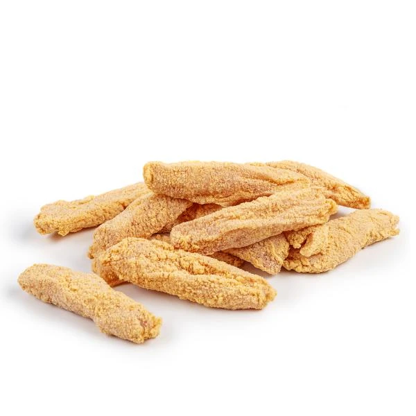
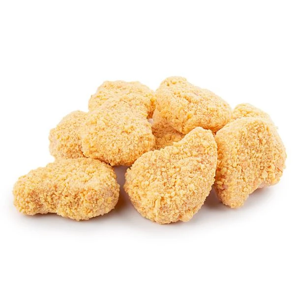
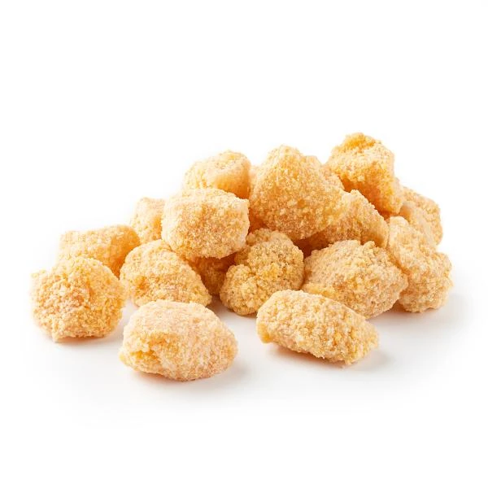
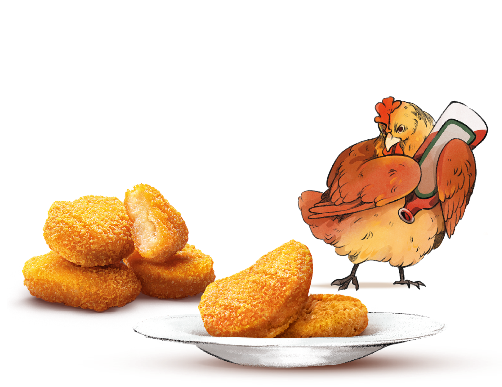
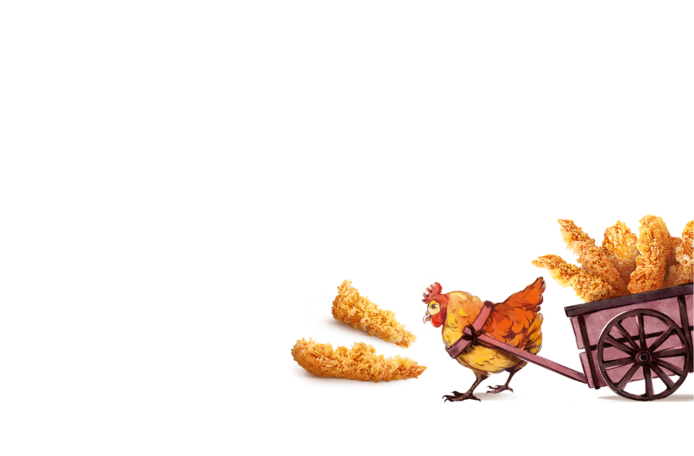
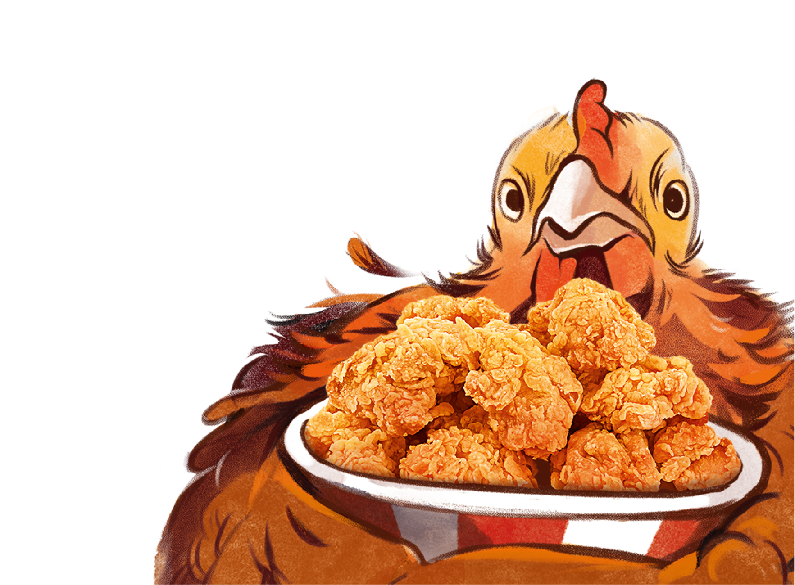
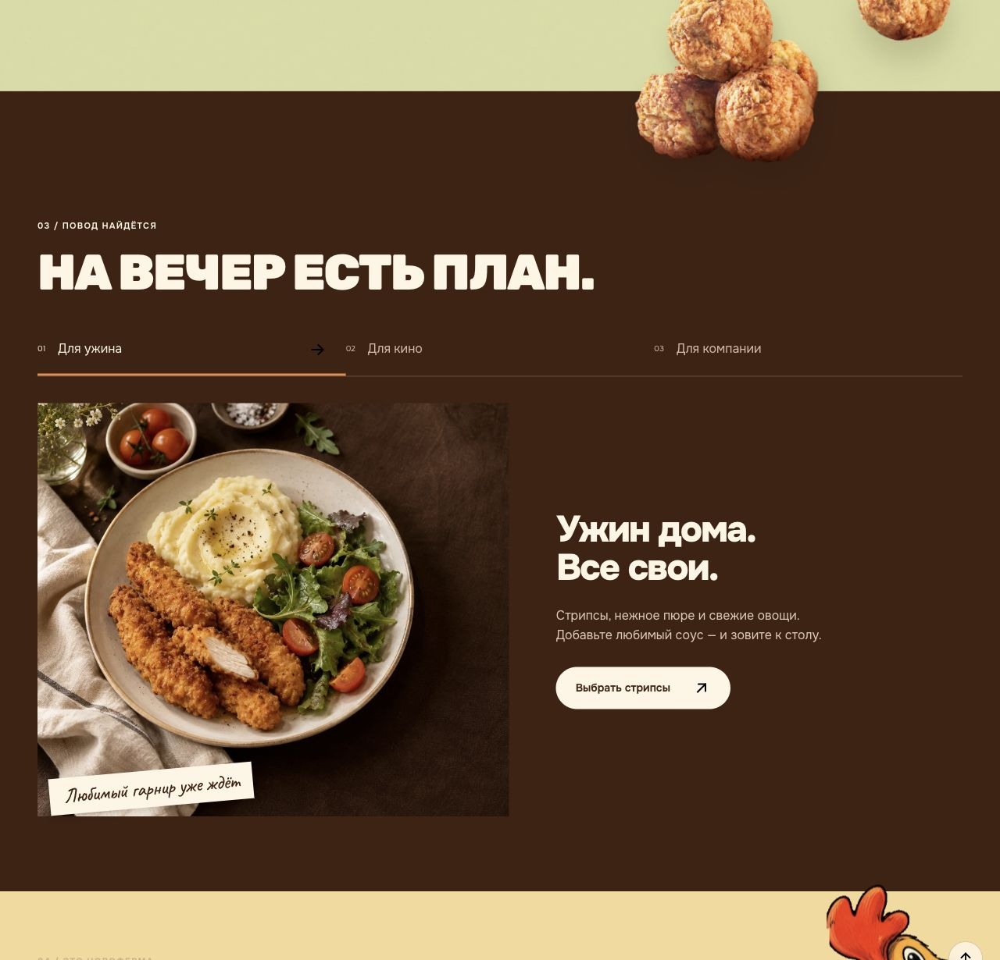
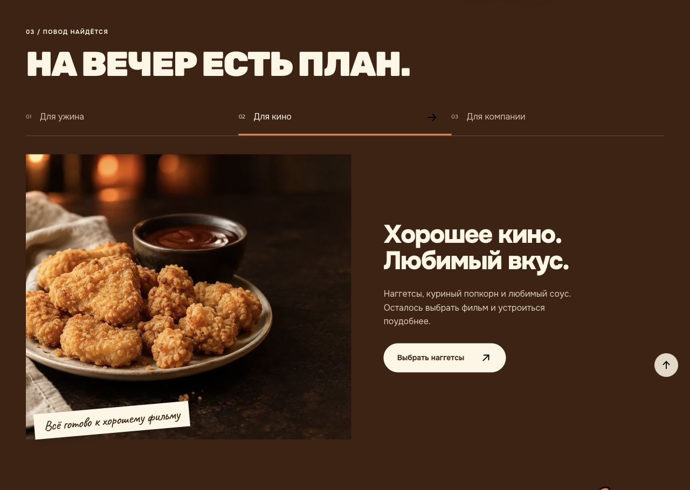
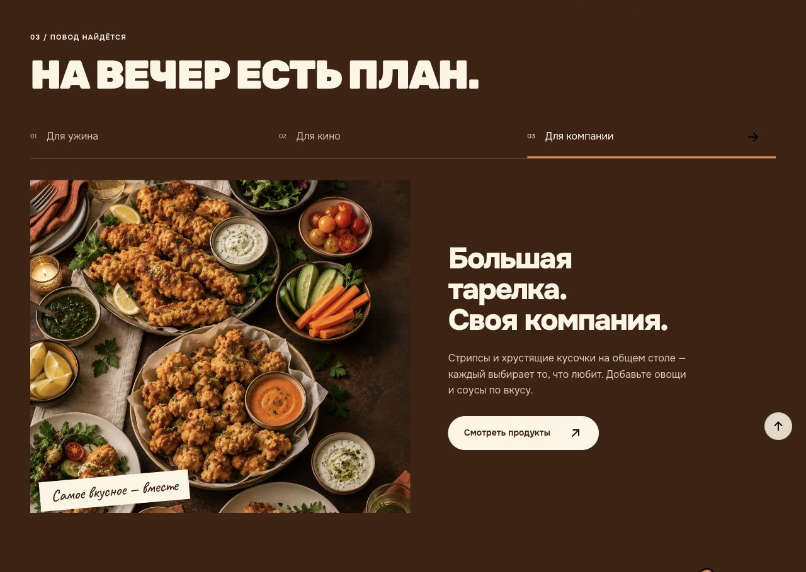
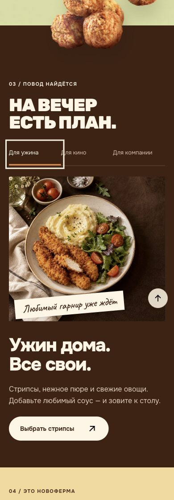

Новоферма · аудит одной секции · 8 октября 2026 · уточнение 10 октября
На вечер есть план.
Сначала вернуть наш продукт.
Идея ужина, кино и встречи с друзьями остаётся полезной. Главный недостаток текущего исполнения — сгенерированная еда не узнаётся как продукт Новофермы. Это замечание владельца продукта от 10 октября; сходство с настоящим товаром важнее красоты сервировки.
Проверены текущая локальная главная, три состояния вкладок при ширине 1280 px, ужин при ширине 390 px и переключение с клавиатуры. Четыре скриншота ниже сняты 8 октября, сохранены и осмотрены. Уточнение от 10 октября добавляет замечание владельца продукта и проверку трёх локальных каталожных изображений; нового аудита интерфейса не проводилось.
Рекомендованная роль: «Мы уже придумали, что поставить на стол под ваш вечер». Сохранить название и сценарии, заменить вымышленный внешний вид еды узнаваемыми продуктами и упаковками, затем добавить конкретный состав и доступ к соответствующим продуктам.
Главное уточнение: продукт не узнаётся
В первоначальном аудите сходство еды с настоящим продуктом было недооценено. Рекомендация сделать текущие сцены светлее недостаточна: она сохраняет неверный внешний вид. По замечанию владельца, сгенерированные кусочки не похожи на продукцию Новофермы. Три текущие сцены нужно заменить, а не просто отретушировать их настроение.
В проекте найдены изображения из каталога Новофермы, записанные в products.json. Ниже именно эти локальные источники. Поле servingImage в данных не означает готовое блюдо: визуально это светлые панированные полуфабрикаты на белом фоне. Их нельзя выдавать за приготовленную еду.

Стрипсы — каталожный источник, без готовой подачи.

Наггетсы — каталожный источник, без готовой подачи.

Куриный попкорн — каталожный источник, без готовой подачи.
Новое визуальное направление: сценарии «Для ужина / Для кино / Для компании» оформить как фирменные композиции с узнаваемыми упаковками и проверенными изображениями продуктов. Использовать светлую бумажную основу, оранжевые акценты, крупные буквы и существующего персонажа — в общей манере сайта. Подачу приготовленной еды вернуть на основе реальной съёмки этих продуктов. Генерацией не придумывать форму, панировку и вид разреза.
Фирменная опора для новой композиции
В исходных материалах пользователя найдены три прозрачные композиции с продуктом и фирменной курочкой. Они дают основу, которую можно использовать без перерисовки самой еды. Это брендовая графика, а не документальная съёмка новой партии. Ниже сохранены точные копии исходных PNG без изменений.

Наггетсы · исходник «наггетсы@3x.png».

Стрипсы · исходник «Ресурс 11@3x (1).png».

Куриный попкорн · исходник «Ресурс 3@3x.png».
Предпочтительный следующий макет: сохранить продукт из этих исходников, а вокруг него собрать смысл выбранного вечера средствами фирменной графики и текста. Не воссоздавать еду генерацией и не делать из этих композиций псевдофотографию реального застолья. Для показанной как фотография готовой подачи нужна предметная съёмка.
Что сохранить
Три жизненных сценария, идею помощи с выбором еды, крупную типографику и рукописные подписи. Цвета сами по себе относятся к сайту, но ресторанные сцены отделяют этаж от фирменного мира. Сохранение текущих фотографий больше не рекомендуется. Постоянная сетка позволяет спокойно сравнивать сценарии.
Что ослабляет этаж
- Недостоверная визуальная идентичность продукта — первый приоритет. По замечанию владельца, еда в сгенерированных сценах не похожа на настоящие продукты. Фото создают ожидание, которое продукт не подтверждает. Замена источника важнее правок света, текста и вкладок.
- Обещание больше содержания. Заголовок говорит «есть план», но абзацы преимущественно перечисляют еду на фото. Не хватает ответа «почему это подходит моему вечеру» и видимой комплектации.
- Подача стилистически уходит в ресторан. Тёмное дерево, керамика, свечи и постановочное освещение отличаются от светлой бумаги, персонажей и вырезанной еды вокруг. Это дизайнерская оценка снимков, а не подтверждённая реакция посетителей.
- Переходы теряют выбранный сценарий. У кино два продукта в тексте, одна карточка по кнопке. У компании общая тарелка превращается в полный каталог.
- Вкладки выглядят служебно. Небольшие надписи теряются рядом с плакатным заголовком. Чёрная стрелка на тёмном фоне плохо различима; оранжевая линия остаётся главным указателем выбора.
1. Для ужина — рабочая основа, мало новой пользы

1280 px. Видны соседние секции, переход с фрикадельками, идея подачи, описание и кнопка.
Сильное: композиция полной тарелки понятна; название продукта указано; «Выбрать стрипсы» соответствует ссылке на стрипсы. Проблема: текст повторяет фото, а «Все свои» повторяет эмоциональную тему соседнего блока. Доработка: дать свободный выбор гарнира и ясно показать формулу ужина: стрипсы + любимый гарнир + овощи.
Доступность: активная вкладка отмечена текстом и линией, но чёрная стрелка плохо читается на коричневом. По снимку нельзя подтвердить полную доступность для программ чтения с экрана.
2. Для кино — понятный повод, неполный выбор

1280 px. Выбрана вкладка «Для кино»; изображение, заголовок и описание сменились.
Сильное: формат еды подходит общей тарелке и соусу. Проблема: фото передаёт красивую еду на тёмном столе, но почти не показывает характер киновечера. В тексте наггетсы и куриный попкорн; ссылка ведёт только на product-naggetsy-kurinye.html. Доработка: показать оба продукта отдельными ссылками и раскрыть идею удобной еды к фильму.
Доступность: стрелка в активной вкладке имеет тот же недостаток контраста. ArrowLeft действительно переключил компанию на кино; вкладка получила видимую кремовую рамку фокуса.
3. Для компании — сильная подача, слабое продолжение

1280 px. Выбрана вкладка «Для компании»; несколько тарелок, овощи и соусы.
Сильное: общее угощение и возможность брать разные кусочки читаются сразу. Проблема: ресторанная сервировка выражена сильнее домашней встречи. «Хрустящие кусочки» не помогают узнать продукты, а «Смотреть продукты» открывает catalogue.html без выбранной подборки. Доработка: назвать продукты и дать ссылки на них прямо в панели; позднее кнопка может открывать подборку для компании, если такой переход реализован.
Доступность: подпись на кремовой наклейке читается, основной текст не размещён поверх фотографии. Полный контраст всех состояний не измерялся.
4. Ужин на телефоне — читается, польза появляется поздно

390 × 844 px, снимок всей секции с краями соседей. Рамка вокруг «Для ужина» — фокус после клавиши Home.
Сильное: все три вкладки помещаются; горизонтального переполнения нет; высота вкладок 50 px, ширина около 117 px. Текст и кнопка доступны в одном столбце. Проблема: до объяснения и действия нужно пройти заголовок, вкладки и крупное фото. Доработка: поставить короткое обещание пользы над вкладками, а состав выбранной идеи сделать компактным и легко сканируемым.
Доступность: рамка фокуса видна. Это проверка одного размера в браузере, без проверки на реальном устройстве, при увеличении текста и с программой чтения с экрана.
Рекомендуемая смысловая конструкция
Повод → что поставить на стол → чем дополнить → конкретные продукты.
Заголовок: «На вечер есть план».
Короткое объяснение: «Ужин дома, кино или встреча с друзьями — выберите повод. Идею для стола мы уже собрали».
| Сценарий | Смысл и пример текста | Состав и переход |
|---|
| Для ужина | «Гарнир — ваш. Идея — наша».
«Стрипсы, любимый гарнир и свежие овощи. Соберите тарелку по своему вкусу и зовите к столу». | Стрипсы + гарнир + овощи.
Ссылка на стрипсы. |
| Для кино | «Выбирайте фильм. Еда уже придумана».
«Наггетсы и куриный попкорн, любимый соус и общая тарелка — устраивайтесь поудобнее». | Наггетсы + попкорн + соус.
Две ссылки на продукты, чтобы выбор оставался у человека. |
| Для компании | «Каждому — любимый кусочек».
«Стрипсы, куриный попкорн, овощи и несколько соусов. Поставьте в центр стола — каждый соберёт своё сочетание». | Конкретные продукты + овощи + соусы.
Ссылки на названные продукты; состав должен совпадать с будущим фото. |
Обновлённый порядок доработки
- Заменить три сгенерированные сцены. Определить проверенные изображения продукта и упаковок; для готовой подачи использовать реальную съёмку.
- Собрать этаж в фирменной манере сайта, сохранив сценарии и показ узнаваемого продукта. Не подменять полуфабрикат на белом фоне фотографией готового ужина.
- Уточнить состав каждого вечера, тексты и переходы к соответствующим продуктам.
- Усилить вкладки и исправить цвет стрелки; проверить новую композицию на телефоне.
Альтернативы: можно сделать этаж более эмоциональным («Вечер — для своих») или превратить в краткий конструктор подачи. Первый вариант сильнее повторяет следующий блок бренда; второй полезен, но звучит суше. Предпочтительна готовая идея вечера с небольшим практическим составом.
Границы проверки: реальные реакции посетителей не исследовались; не проверены все ширины, увеличение, все клавиатурные команды, полная работа программ чтения с экрана и медленная сеть. Время приготовления и порции не подтверждены текущими данными продуктов, поэтому обещания вроде «за 15 минут» в рекомендации не добавлены. Код сайта в рамках этого аудита не изменён.
Открыть текущую главную